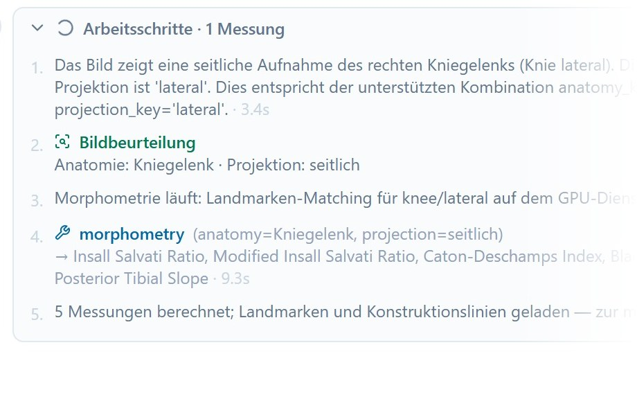
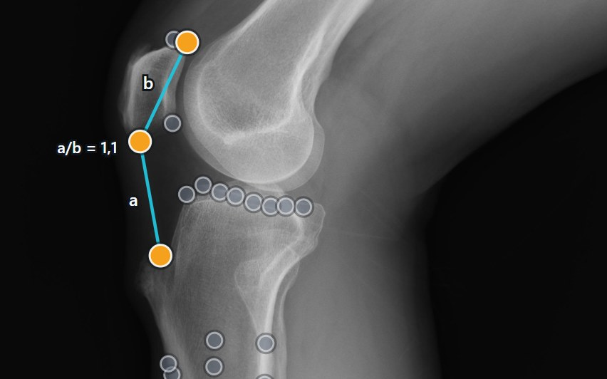
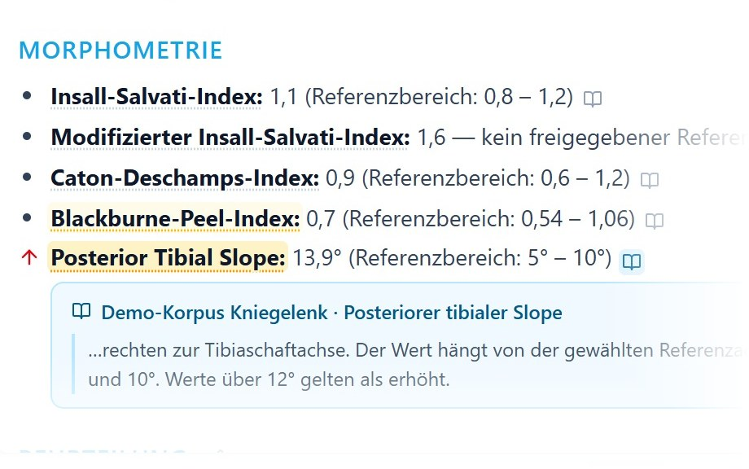
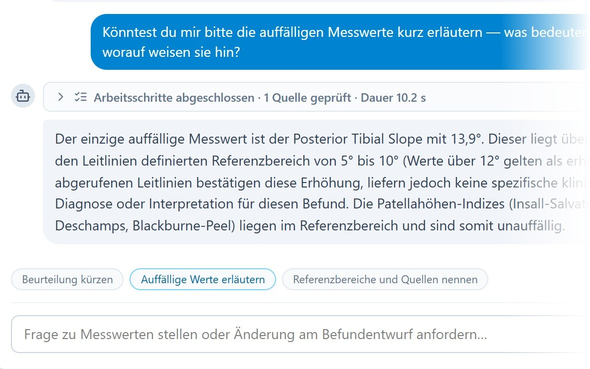

Radiograph Morphometry Agent Grounded reports for musculoskeletal radiographs
Abstract
Many measurements on musculoskeletal radiographs, such as patellar height or tibial slope, are still taken by hand and then compared with reference ranges from the literature. Language models could draft such reports, but they tend to produce numbers and thresholds of their own. We present an agent that leaves both to dedicated services. A vision-language model assesses the radiograph and runs the case. A morphometry service places the anatomical landmarks and computes every measurement. A guideline search supplies every reference range, and a value is only interpreted when a retrieved passage defines its range. The model then writes a structured report in which every value can be traced to its construction on the image and every range to its source. The radiologist can ask questions, edit the impression and correct landmarks, and the report follows. Each service can be replaced and run on local infrastructure, so radiographs do not have to leave the hospital. This is ongoing work, and a reader study with radiologists is in preparation.
Method

1Image assessment
The language model looks at a downsampled copy of the radiograph and names body region and projection. The radiologist can change both before the measurements start.

2Morphometry
The morphometry service matches the image against annotated reference radiographs, places the landmarks and computes every measurement of the view. The constructions are drawn on the image.

3Guideline search
For each measurement the agent searches the guideline corpus. Only a value with a retrieved reference range is interpreted, and the range links to its passage. Other values are reported as measured.

4Report and dialogue
The model drafts a structured report and answers questions in the chat. After a landmark correction the measurements update, and the agent checks the report against the new values.
Reader study In preparation
A reader study with radiologists will evaluate the drafted reports. Results will be added here.
Who supplies what
The language model plans the case and writes the text, but it never supplies a number or a threshold of its own. Every measurement comes from the morphometry service, and every reference range comes from the guideline search. A value without a retrieved range is reported but not interpreted. The radiologist can also edit the report directly, and later updates keep their wording.
Swipe to see the whole diagram.
Supported views
The agent reads the supported views and their measurements from the morphometry service when it starts, so a new view of the service needs no change to the agent. The reference implementation currently covers six views.
Knee lateral
Insall-Salvati ratio · modified Insall-Salvati ratio · Caton-Deschamps index · Blackburne-Peel ratio · patella morphology ratio · posterior tibial slope (three reference axes)
Knee axial
Sulcus angle · congruence angle · patellar tilt angle · lateral patellofemoral angle
Knee AP
Medial and lateral joint space width
Foot AP
Hallux valgus angle · intermetatarsal angles 1–2 and 1–5
Foot lateral
Medial arch angle · talus–first metatarsal angle · calcaneal inclination angle
Shoulder AP
Critical shoulder angle · lateral acromion angle · acromial index · acromiohumeral interval
Citation
A paper on the agent is in preparation. Until then, please cite the morphometry framework.
@article{eschweiler2026landmark,
title = {An Artificial Intelligence Framework for Universal Landmark Matching and Morphometry in Musculoskeletal Radiography},
author = {Eschweiler, Dennis and Cornejo Merodio, Eneko and Barajas Ordonez, Felix and Lichev, Aleksandar and Ignatova, Nikol and von der St{\"u}ck, Marc Sebastian and Kuhl, Christiane and Truhn, Daniel and Nebelung, Sven},
journal = {European Radiology},
year = {2026},
doi = {10.1007/s00330-026-12555-y}
}